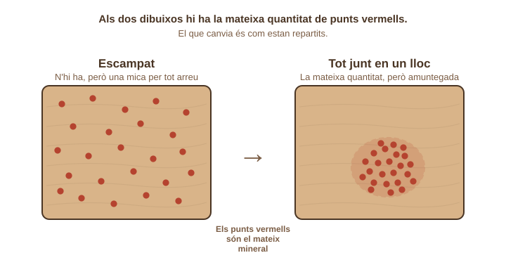
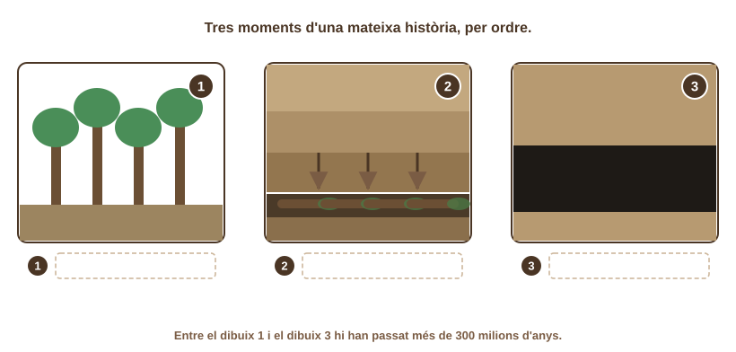
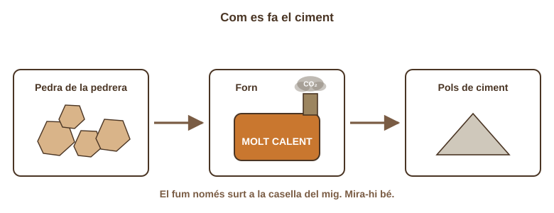
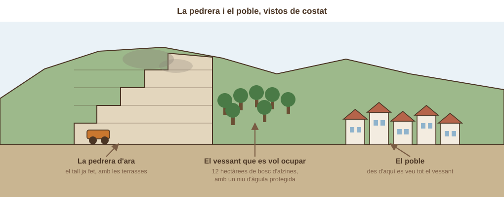
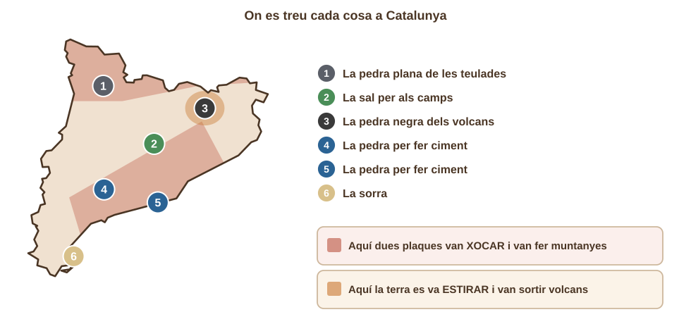

- Sé dir què és una pedrera i què se'n treu.
- Sé dir d'on ve el carbó i per quina raó s'acabarà.
- Sé assenyalar on surt el fum quan es fa ciment.
- Sé donar una raó a favor i una raó en contra d'ampliar una pedrera.
Aixeca el cap i mira l'aula. El terra, les parets, el sostre, els vidres, les potes de la cadira. Tot això, abans de ser aula, era una pedra o un mineral dins d'un forat de terra. Avui anirem a buscar de quin forat.
💡 Mira al teu voltant i escriu tres coses que veus. Després encercla de què et sembla que està feta cadascuna.
| Una cosa que veig a l'aula | De què està feta |
|---|---|
| pedra / metall / vidre / fusta | |
| pedra / metall / vidre / fusta | |
| pedra / metall / vidre / fusta |
💡 Una frase teva, encara que no n'estiguis segur/a.
Al teu grup us donaran una targeta. Cada grup en té una de diferent, i totes parlen d'una cosa que es treu de terra a Catalunya:
A la pedra per fer ciment · B la pedra plana de les teulades · C la sal per als camps · D la sorra · E la pedra negra dels volcans.
Llegiu la targeta entre tots i ompliu la taula de sota només del vostre.
💡 Tres caselles. Copia del que diu la targeta.
| La nostra targeta | |
|---|---|
| D'on es treu | |
| Per a què serveix | |
| Què li fa al paisatge |
Quan traiem pedra d'un turó per fer ciment, en fem un forat. Aquell forat no es torna a omplir sol: la roca que hi havia va trigar milions d'anys a formar-se. Si algú no hi planta arbres i li torna a donar forma, el forat es queda allà.
💡 Una de les dues no passa mai enlloc. Pensa quant de temps triga a fer-se una roca.

Mira els dos dibuixos de dalt. Als dos hi ha la mateixa quantitat de punts vermells: els punts són un mineral, una cosa que ens serveix.
Al primer bloc, els punts estan escampats. Per aconseguir-ne un grapat hauries de remenar tot el bloc sencer.
Al segon bloc, els punts estan tots junts en un lloc. Aquí sí que val la pena cavar: en un forat petit els tens tots.
Un lloc on una cosa útil està tota junta i es pot anar a buscar es diu un jaciment. Una pedrera és el forat que fem per treure'n la pedra.
💡 Les dues opcions són blocs del dibuix: pensa en quin val la pena de cavar.

💡 Escriu el nom a la casella de cada número, al dibuix de dalt.
Els tres dibuixos expliquen d'on ve el carbó, la pedra negra que es crema.
1. Fa moltíssims anys hi havia boscos damunt de terra entollada.
2. Els arbres van caure i el fang els va tapar abans que es fessin malbé. A sobre hi van anar caient més i més capes de terra.
3. Amb el pes de tota aquella terra a sobre, i després de més de 300 milions d'anys, aquelles restes de plantes es van convertir en una capa negra: el carbó.
El carbó, el petroli i el gas es diuen combustibles fòssils. Els cremem per tenir energia. I aquí hi ha el problema: van trigar 300 milions d'anys a fer-se, i ens els estem acabant en 200 anys.
💡 Les dues opcions parlen del temps. Mira les xifres del text de dalt.

I ara el ciment, que és el que enganxa les parets d'aquesta aula.
1. Es treu pedra de la pedrera.
2. Aquella pedra es fica dins un forn molt calent. Tan calent que la pedra es trenca per dins i deixa anar un gas: el CO₂.
3. El que queda es mol i es fa pols: això és el ciment.
Fixa-t'hi bé: el fum no surt del camió ni de la pedrera. Surt de la pedra mateixa, quan es posa al forn. El CO₂ és el gas que escalfa el planeta.
💡 Assenyala-ho al dibuix de dalt amb una fletxa, i després encercla la resposta.
L'empresa de la pedrera que hi ha al costat del poble en vol fer una de més gran. Vol menjar-se el tros de muntanya que es veu des de les cases (uns 12 camps de futbol). L'ajuntament ha de dir si li dona permís.
El que diu l'empresa: hi treballen 40 persones del poble, i si no la poden fer més gran, la pedrera tancarà. A més, prometen arreglar el tros vell: plantar-hi arbres i fer-hi una bassa.
El que diuen els veïns: les explosions per trencar la pedra fan soroll i omplen de pols les cases de dalt. I el tros de muntanya quedarà retallat per sempre, i es veurà des de tot el poble.
I una altra cosa: en aquell tros de muntanya hi ha un bosc d'alzines, i hi fa el niu una àguila protegida (vol dir que la llei no deixa que se li faci mal).

La targeta de dades té les raons de les dues bandes. Uns diuen que sí i altres diuen que no, i tots dos tenen motius de debò. No hi ha una resposta correcta: el que es valora és que sàpigues dir per quina raó penses el que penses.
💡 Una raó a cada casella. Les pots copiar de la targeta o pensar-ne de teves.
| La raó | |
|---|---|
| Una raó per AMPLIAR la pedrera | |
| Una raó per NO ampliar-la |

Aquest mapa diu on hi ha cada cosa a Catalunya. I fixa't en una cosa: no estan escampades a l'atzar.
La taca rosada de dalt és la zona que es va aixecar quan les dues plaques van xocar i van fer el Pirineu — la mateixa de la sessió passada. Allà hi ha el calcari, la pedra del ciment: era el fons d'un mar antic i el xoc el va pujar fins a dalt.
La taca taronja és la Garrotxa, la zona que es va estirar. Allà hi ha la pedra negra dels volcans.
O sigui: el mateix que fa tremolar la terra és el que hi va posar la pedra que tenim a les parets.
💡 Les dues opcions parlen del mapa: mira on cau la taca rosada.
Ara escriuràs tu. Tens els quatre passos de sempre. Aquest cop els dos primers no et donen el començament de la frase: només et diuen on has de mirar, i la frase te la fas tu. Els dos últims sí que et donen el començament. Cada pas, una o dues línies.
👀 OBSERVO
Mira el dibuix de la pedrera i el poble.
❓ EM PREGUNTO
Alguna cosa que no tinguis clara del cas.
🔗 CONNECTO
«Això té a veure amb…»
💡 DEDUEIXO
«Per tant, jo (deixaria / no deixaria) fer la pedrera més gran perquè…»